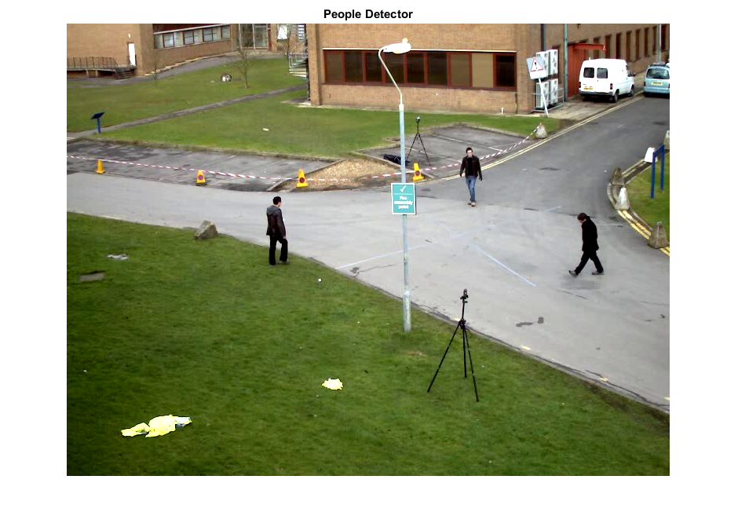
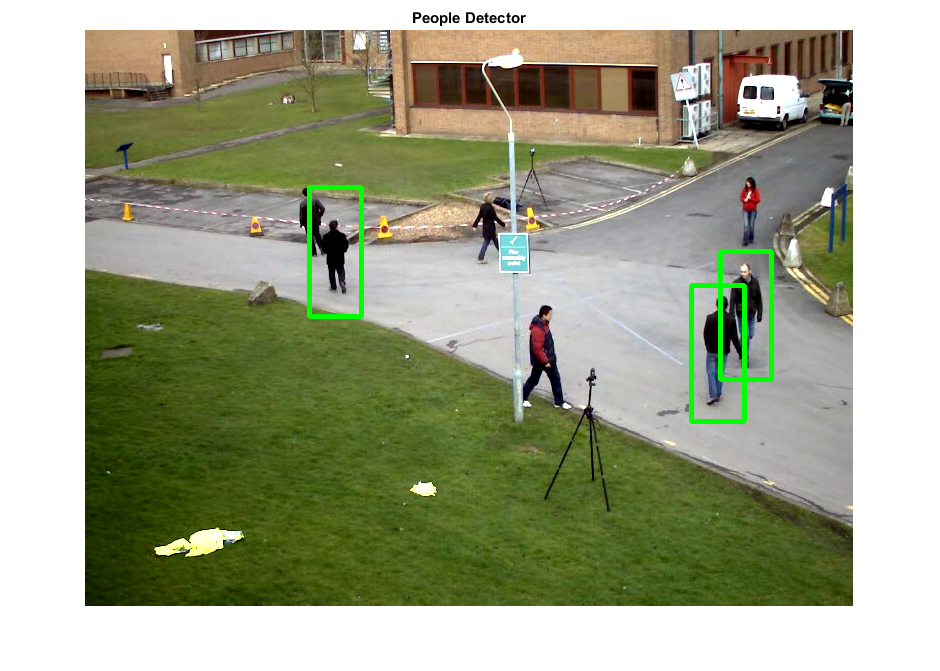

People Detection using HoG
This program demonstrates the use of the HoG descriptor using the pre-trained SVM model for people detection. During execution, close figure to quit.
Sources:
Contents
Detector
initialize
if true % DefaultPeopleDetector hog = cv.HOGDescriptor('WinSize',[64 64*2], 'NLevels',64); hog.SvmDetector = 'DefaultPeopleDetector'; opts = {'HitThreshold',0, 'WinStride',[8 8], 'Padding',[32 32], ... 'Scale',1.05, 'FinalThreshold',2}; elseif true % DaimlerPeopleDetector hog = cv.HOGDescriptor('WinSize',[48 48*2], 'NLevels',13, ... 'GammaCorrection',true); hog.SvmDetector = 'DaimlerPeopleDetector'; opts = {'HitThreshold',1.4, 'WinStride',[8 8], 'Padding',[0 0], ... 'Scale',1.05, 'FinalThreshold',8}; else % load your own custom detector (linear SVM coefficients) hog = cv.HOGDescriptor(); hog.SvmDetector = randn(1,3781); end
you can also try tuning some parameters
%Scale */ 1.05 %NLevels +- 1 %FinalThreshold +- 1 %HitThreshold +- 0.25 %GammaCorrection = !GammaCorrection
check HOG params are consistent with the loaded pretrained SVM classifier
assert(hog.checkDetectorSize(), 'Invalid HOG params');Video
input video file
vidfile = fullfile(mexopencv.root(),'test','768x576.avi'); if exist(vidfile, 'file') ~= 2 % download video from Github url = 'https://cdn.rawgit.com/opencv/opencv/3.1.0/samples/data/768x576.avi'; disp('Downloading video...') urlwrite(url, vidfile); end
Read from video file
vid = cv.VideoCapture(vidfile); assert(vid.isOpened(), 'cannot open video file'); img = vid.read(); assert(~isempty(img), 'Failed to read frame'); vid.PosFrames = 700;
prepare figure
hImg = imshow(img);
title('People Detector')Run
main processing loop
while ishghandle(hImg) % grab a new frame img = vid.read(); if isempty(img), break; end out = img; if false % convert image to gray img = cv.cvtColor(img, 'RGB2GRAY'); end % Run the detector with default parameters. % To get a higher hit-rate (and more false alarms, respectively), % decrease the HitThreshold and FinalThreshold % (set FinalThreshold to 0 to turn off the grouping completely). tic rects = hog.detectMultiScale(img, opts{:}); fprintf('detection time = %f sec, %d found\n', toc, numel(rects)); % Filter: drop small detections inside a bigger detection mask = true(size(rects)); for i=1:numel(rects) for j=1:numel(rects) if i~=j && isequal(cv.Rect.intersect(rects{i},rects{j}), rects{i}) mask(i) = false; break; end end end rects = rects(mask); % draw detections for i=1:numel(rects) % The HOG detector returns slightly larger rectangles than the real % objects, so we slightly shrink the rectangles to get a nicer output r = rects{i}; if false r(1:2) = r(1:2) + round(r(3:4) .* [0.1 0.07]); r(3:4) = round(r(3:4) * 0.8); pt1 = cv.Rect.tl(r); pt2 = cv.Rect.br(r); else pad = fix(r(3:4) .* [0.15 0.05]); pt1 = r(1:2) + pad; pt2 = r(1:2) + r(3:4) - pad; end out = cv.rectangle(out, pt1, pt2, 'Color',[0 255 0], 'Thickness',3); end % display frame set(hImg, 'CData',out); drawnow; end vid.release(); % close video file
detection time = 0.146388 sec, 3 found detection time = 0.148008 sec, 4 found detection time = 0.155572 sec, 5 found detection time = 0.154974 sec, 5 found detection time = 0.152168 sec, 6 found detection time = 0.149192 sec, 4 found detection time = 0.145940 sec, 5 found detection time = 0.137161 sec, 4 found detection time = 0.148575 sec, 4 found detection time = 0.153493 sec, 3 found detection time = 0.145988 sec, 5 found detection time = 0.157910 sec, 3 found detection time = 0.155631 sec, 4 found detection time = 0.148282 sec, 4 found detection time = 0.143190 sec, 3 found detection time = 0.148493 sec, 7 found detection time = 0.142270 sec, 7 found detection time = 0.152794 sec, 5 found detection time = 0.144161 sec, 4 found detection time = 0.151789 sec, 6 found detection time = 0.147086 sec, 5 found detection time = 0.144663 sec, 4 found detection time = 0.145949 sec, 4 found detection time = 0.145763 sec, 5 found detection time = 0.144775 sec, 3 found detection time = 0.158739 sec, 4 found detection time = 0.159594 sec, 3 found detection time = 0.146640 sec, 3 found detection time = 0.162273 sec, 3 found detection time = 0.152746 sec, 3 found detection time = 0.145167 sec, 4 found detection time = 0.155316 sec, 4 found detection time = 0.145318 sec, 6 found detection time = 0.146710 sec, 4 found detection time = 0.147226 sec, 4 found detection time = 0.146623 sec, 6 found detection time = 0.153140 sec, 5 found detection time = 0.154297 sec, 4 found detection time = 0.156233 sec, 6 found detection time = 0.149092 sec, 5 found detection time = 0.147713 sec, 5 found detection time = 0.159548 sec, 6 found detection time = 0.142044 sec, 6 found detection time = 0.145139 sec, 5 found detection time = 0.155425 sec, 4 found detection time = 0.145603 sec, 3 found detection time = 0.147841 sec, 5 found detection time = 0.155949 sec, 4 found detection time = 0.145133 sec, 4 found detection time = 0.178830 sec, 3 found detection time = 0.150924 sec, 6 found detection time = 0.157561 sec, 5 found detection time = 0.165834 sec, 4 found detection time = 0.144219 sec, 4 found detection time = 0.144567 sec, 4 found detection time = 0.132561 sec, 4 found detection time = 0.146767 sec, 2 found detection time = 0.144282 sec, 4 found detection time = 0.146206 sec, 4 found detection time = 0.153830 sec, 5 found detection time = 0.149198 sec, 4 found detection time = 0.147265 sec, 4 found detection time = 0.152725 sec, 4 found detection time = 0.150504 sec, 5 found detection time = 0.145934 sec, 4 found detection time = 0.152720 sec, 4 found detection time = 0.155737 sec, 5 found detection time = 0.141774 sec, 5 found detection time = 0.151274 sec, 3 found detection time = 0.160060 sec, 3 found detection time = 0.147724 sec, 4 found detection time = 0.145693 sec, 4 found detection time = 0.173476 sec, 4 found detection time = 0.146933 sec, 4 found detection time = 0.143701 sec, 4 found detection time = 0.154149 sec, 4 found detection time = 0.154983 sec, 3 found detection time = 0.146519 sec, 3 found detection time = 0.145807 sec, 3 found detection time = 0.157489 sec, 4 found detection time = 0.146488 sec, 4 found detection time = 0.147261 sec, 4 found detection time = 0.145029 sec, 6 found detection time = 0.174384 sec, 5 found detection time = 0.154612 sec, 6 found detection time = 0.144678 sec, 5 found detection time = 0.146890 sec, 4 found detection time = 0.146732 sec, 4 found detection time = 0.168470 sec, 1 found detection time = 0.156428 sec, 3 found detection time = 0.161436 sec, 3 found detection time = 0.177373 sec, 3 found detection time = 0.143344 sec, 3 found detection time = 0.148440 sec, 3 found detection time = 0.156471 sec, 3 found